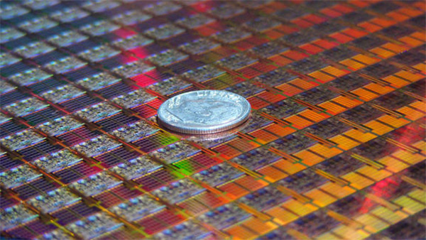
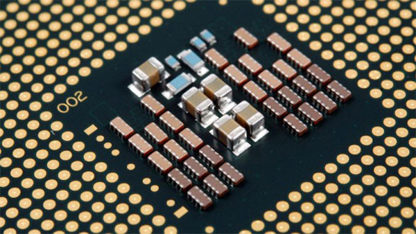
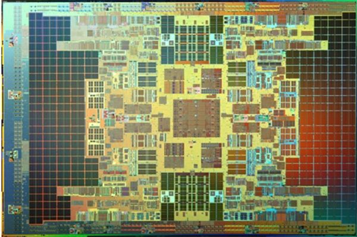
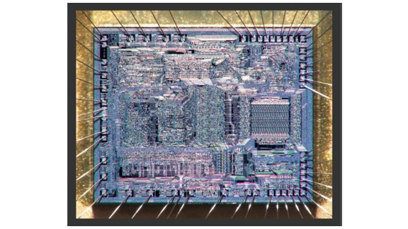
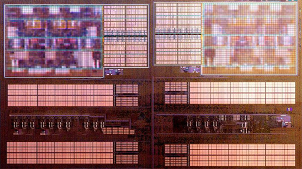
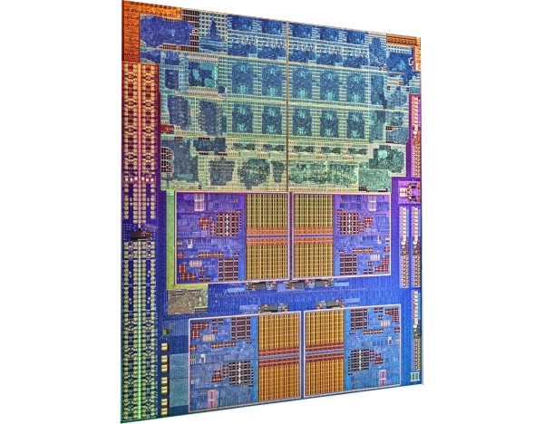

Você está cansado de ouvir que o “processador é o cérebro do computador”. Mas você sabe como ele é por dentro? Geralmente, nós só vemos os chips por fora, da maneira como os colocamos na placa-mãe. Hoje, essa história vai mudar, pois temos várias imagens incríveis para mostrar como são as peças, todas elas vistas bem de perto.
Os processadores que escolhemos para mostrar são os seguintes:
- Intel Penryn
- Intel Core 2 Quad
- Intel Itanium
- AMD 2903ADC
- AMD Bulldozer
- AMD Llano
São fotografias que mostram como são perfeitas as estruturas responsáveis por toda a capacidade de processamento dos computadores, smartphones, tablets e outros equipamentos eletrônicos. Está pronto para embarcar em um mundo microscópico?
Intel Penryn
Este processador da Intel ficou conhecido como “Penryn”. Ele é produzido com processos de 45 nanômetros, sendo responsável pelos chips Core 2 e Xeon da mesma geração (2007/2008). Na imagem, você pode ver vários “Penryns” juntos, sendo que a moeda ocupa mais do que um deles inteiro.
Intel Core 2 Quad
Perfeição simétrica e avanços muito rápidos no desenvolvimento de novos chips. Na foto acima, você está vendo o Intel Core 2 Quad Q8400, que ainda hoje oferece resultados excelentes para os consumidores e foi criado muito rapidamente em resposta ao AMD Phenon quad-core.
Intel Itanium
Há quem diga que estes processadores foram os primeiros a ultrapassar a marca dos dois bilhões de transistores. A Intel nunca confirmou o rumor, mas também jamais desmentiu. Enquanto isso, apenas observamos a complexidade do Intel Itanium, um dos chips mais fortes para servidores.
AMD Am2903ADC
Com apenas 38 pinos, o AMD Am2903ADC tinha largura de banda de apenas 4-bits. O processador da AMD já tem algumas décadas e, como você pode ver, era bastante rústico em relação aos chips que podemos instalar atualmente em nossas máquinas.
AMD Bulldozer
Oito núcleos, incontáveis transistores e muita potência gráfica. Aqui, estamos diante da arquitetura AMD Bulldozer, responsável por alguns dos processadores mais recentes da fabricante. Ao todo, são 213 milhões de transistores alinhados para um processamento veloz e confiável.
AMD Llano
Processos de fabricação de 32 nanômetros são a arma dos chips Llano da AMD. O equipamento traz ainda a tecnologia AMD Turbo Core para otimizar o desempenho do processador. Muitas funções simultâneas podem ser executadas, graças aos múltiplos núcleos.